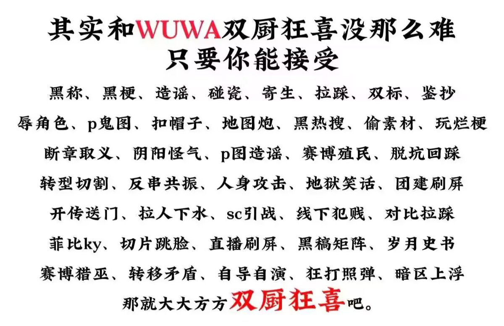

サイバー環状線
@CyberKanjousen
@fei_ge_li 是 gosari ごさり 指使的吗？库狗的所作所为与 gosari ごさり 又有什么关系？gosari ごさり 伤害原神玩家的感情了吗？gosari ごさり 违反了什么法律或者道德上的约束？如果是，请出示证据。
如果不是，那么米学长为什么要网暴 gosari ごさり ？你们网暴一个无辜 YouTuber 的行为就是正确的吗？

菲戈李
@fei_ge_li
@CyberKanjousen 来来来你告诉我那期鸣潮视频底下一堆米游鬼图怎么解释，一定不是库狗和库野种干的对吧😅 https://t.co/Yq7DNm6HeS